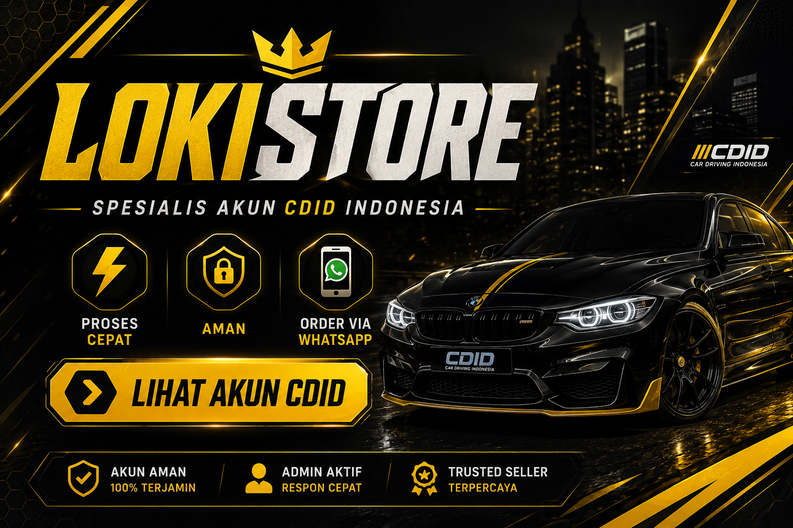

Spesialis Akun CDID Indonesia
⚡ Pengiriman Cepat • 🛡️ Full Garansi • 🤝 Pelayanan Terbaik
Selamat datang di LokiStore, tempat terbaik untuk mencari akun Car Driving Indonesia (CDID) dengan proses yang cepat, aman, dan mudah. Kami menyediakan layanan yang sederhana tanpa proses yang membingungkan. Cukup hubungi admin, lihat stok yang tersedia, dan pilih akun yang sesuai dengan kebutuhan Anda.
Karena stok akun CDID selalu berubah setiap saat,
admin tidak dapat menampilkan seluruh akun yang tersedia di website.
Untuk melihat akun yang tersedia saat ini beserta spesifikasinya,
silakan pilih salah satu opsi di bawah ini.
LokiStore merupakan platform yang berfokus pada penyediaan akun Car Driving Indonesia (CDID) dengan pelayanan yang cepat, aman, dan terpercaya. Kami hadir untuk membantu para pemain mendapatkan akun yang sesuai dengan kebutuhan mereka melalui proses yang sederhana, jelas, dan mudah dipahami. Sejak awal berdiri, LokiStore memiliki tujuan untuk memberikan pengalaman transaksi yang nyaman bagi seluruh pelanggan tanpa prosedur yang rumit maupun membingungkan.
Kami memahami bahwa setiap pemain memiliki tujuan bermain yang berbeda. Sebagian pemain mencari akun dengan koleksi kendaraan yang lengkap, sebagian lainnya menginginkan akun dengan progres permainan yang tinggi, dan tidak sedikit pula yang mencari akun untuk langsung menikmati berbagai fitur yang tersedia tanpa harus memulai dari awal. Oleh karena itu, LokiStore berusaha memberikan pelayanan yang fleksibel agar setiap pelanggan dapat menemukan akun yang sesuai dengan kebutuhan dan preferensi mereka.
Dalam dunia jual beli akun game, kejelasan informasi merupakan salah satu hal yang paling penting. Karena itu, kami selalu berusaha memberikan informasi yang transparan mengenai akun yang tersedia. Pelanggan dapat menghubungi admin secara langsung untuk memperoleh informasi terbaru mengenai spesifikasi akun, kendaraan yang dimiliki, jumlah uang dalam permainan, aset yang tersedia, serta berbagai detail lainnya yang diperlukan sebelum melakukan pembelian.
LokiStore tidak menampilkan seluruh akun secara langsung di website karena stok dapat berubah sewaktu-waktu. Dengan sistem ini, pelanggan dapat memperoleh informasi yang lebih akurat dan terkini dibandingkan daftar akun yang jarang diperbarui. Kami percaya bahwa memberikan informasi secara langsung merupakan cara terbaik untuk memastikan pelanggan memperoleh data yang benar dan sesuai dengan kondisi stok yang tersedia saat itu.
Kami juga memahami bahwa kepercayaan merupakan hal yang sangat penting dalam setiap transaksi digital. Oleh karena itu, kami selalu berusaha memberikan pelayanan yang jujur, ramah, dan profesional kepada seluruh pelanggan. Setiap pertanyaan akan dijawab dengan sebaik mungkin selama jam operasional berlangsung sehingga pelanggan dapat merasa lebih nyaman sebelum melakukan transaksi.
Semoga harimu menyenangkan 😄
Kalau nanti kepikiran beli akun CDID,
LokiStore masih di sini kok 🙏🚗